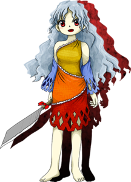

- Welcome to Touhou Wiki!
- Please register to edit. For assistance, check in with our Discord server or IRC channel.
Nemuno Sakata

|
Attention: This article is a stub and it needs expanding with more information related to the article's topic. If you can add to it in any way, please do so. |
Nemuno Sakata | |
|---|---|
|
 Nemuno Sakata in Hidden Star in Four Seasons The Yamanba who Surpasses This Floating World's BarriersMore Character Titles | |
| Species | |
| Abilities |
Creating sanctuaries |
| Location | |
Music Themes | |
| |
Appearances | |
| Official Games | |
| |
| Print Works | |
| |
Nemuno Sakata (坂田 ネムノ Sakata Nemuno) is a yamanba who lives alone on the Youkai Mountain.
General Information[edit]
Nemuno appeared as the Stage 2 midboss and Boss in Hidden Star in Four Seasons.
Abilities[edit]
- Ability to create sanctuaries
Background Information[edit]
Name[edit]
Her full name is Nemuno Sakata (坂田 ネムノ). The characters for Sakata (坂田) are spelled with saka (坂) "hill, incline, slope", and ta (田) "rice field". Her surname Sakata (坂田) is a reference to Sakata no Kintoki (坂田 金時) a child of superhuman strength who was raised by a Yamanba. He was first known as Kintarō (金太郎 lit. Golden boy) but after catching Shuten-dōji he became a loyal follower of Minamoto no Yorimitsu and changed his name to Sakata no Kintoki.
Design[edit]
Nemuno has red eyes and wavy waist-length grey hair that falls down naturally in a somewhat ragged fashion. She wears blue detatched sleeves and a knee-length three colored dress, resembling a one-shoulder tunic, that wraps over her left shoulder yet still leaves both shoulders bare. Her dress has three color regions - yellow/gold on top, orange in the middle, and red on the bottom, all divided in a nonparallel manner by ragged white trim. The bottom is perforated with two and a half staggered rings of diamond-shaped holes and her detached sleeves bear a similar design. Nemuro wields a giant cleaver with a red bow at the front of the handle. She does not wear any footwear.
Story[edit]
- Hidden Star in Four Seasons
- Main article: Hidden Star in Four Seasons: Story
Nemuno attacks the protagonist, who has reached a secluded area on Youkai Mountain. Nemuno is confused as to why an outsider would enter this place, but attacks in order to protect her territory. She is defeated shortly after.
Relationships[edit]
Spell Cards[edit]
| Name | Translated | Comments | Games | Stage | ||
|---|---|---|---|---|---|---|
| Total: 9 | ||||||
| 雨符「囚われの秋雨」 | Rain Sign "Imprisoning Autumn Rain" | HSiFS | St. 2: E/N | |||
| 雨符「呪われた柴榑雨」 | Rain Sign "Cursed Torrential Rain" | HSiFS | St. 2: H/L | |||
| 刃符「山姥の包丁研ぎ」 | Blade Sign "Yamanba's Kitchen Knife Sharpening" | HSiFS | St. 2: E/N | |||
| 刃符「山姥の鬼包丁研ぎ」 | Blade Sign "Yamanba's Oni Kitchen Knife Sharpening" | HSiFS | St. 2: H/L | |||
| 尽符「マウンテンマーダー」 | Blade Exhaustion Sign "Mountain Murder" | HSiFS | St. 2: E/N | |||
| 尽符「ブラッディマウンテンマーダー」 | Blade Exhaustion Sign "Bloody Mountain Murder" | HSiFS | St. 2: H/L | |||
| 研符「狂い輝く鬼包丁」 | Sharpen Sign "Madly Glinting Oni Kitchen Knife" | VD | Thursday - 2 | |||
| 殺符「窮僻の山姥」 | Murder Sign "Deeply-Secluded Yamanba" | VD | Thursday - 3 | |||
| 夢尽「殺人鬼の懐」 | Dream Blade Exhaustion "Demonic Killer's Retreat" | VD | Wrong Sunday - 6 | |||
Additional Information[edit]
- Like Mystia Lorelei, Nemuno is one of the few characters that immediatly starts the end-of-stage boss battle after the mid-boss fight.
Fandom[edit]
Official Profiles[edit]
Official Sources[edit]
- 2017/05/07 Hidden Star in Four Seasons trial - omake.txt (trial profile, stage 2 dialogue)
References[edit]
| This page is part of Project Characters, a Touhou Wiki project that aims to write proper descriptions for all official characters of Touhou Project. Please keep the character page guidelines in mind when contributing. |